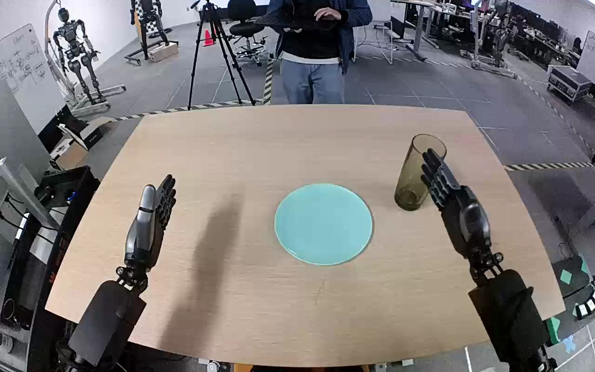

NVIDIA GR1 · 61
Video 61

Visual review action_review.json
{
"prompt_protocol": "humanoid_action_v1",
"prompt_provenance": "visually_authored_from_video_and_initial_frame",
"reviewed_contact_sheets": [
"sheet_001.jpg"
],
"inspected_frame_stride": 2,
"inspected_sampled_frame_count": 60,
"initial_scene": "Ego-aligned downward view with both robot forearms extending from the lower edge toward a tan tabletop. An upright translucent green glass is to the right of a light blue plate; the open right hand is near the glass and the left hand is held clear to the left.",
"observed_sequence": [
{
"frame_start": 0,
"frame_end": 20,
"action": "Right hand opens and moves outward/upward away from the initially nearby green glass; glass remains upright on the tabletop. Left hand remains idle.",
"confidence": "high"
},
{
"frame_start": 21,
"frame_end": 52,
"action": "Right hand returns toward the glass with fingers open and thumb approaching the near side.",
"confidence": "high"
},
{
"frame_start": 53,
"frame_end": 84,
"action": "Right fingers and opposing thumb close around the glass side, establishing a grasp while it remains near its original tabletop location.",
"confidence": "high"
},
{
"frame_start": 85,
"frame_end": 100,
"action": "Right arm lifts the glass clear of the table and carries it inward over the plate, maintaining an approximately upright orientation.",
"confidence": "high"
},
{
"frame_start": 101,
"frame_end": 112,
"action": "Right hand lowers the glass onto the light blue plate, keeping the grasp while its base comes to rest near the plate center.",
"confidence": "high"
},
{
"frame_start": 113,
"frame_end": 119,
"action": "Right fingers spread and withdraw from the glass; glass remains upright unsupported by the hand on the plate.",
"confidence": "high"
}
],
"arm_hand_roles": {
"right": "Sole manipulating hand: closes fingers and thumb around glass, lifts and transports it upright, lowers onto plate, then releases.",
"left": "Remains open and clear of objects throughout; no support, transfer or stabilization.",
"coordination": "Single-hand manipulation; left hand does not participate."
},
"anatomical_side_evidence": {
"description": "Camera looks forward/down between the two forearms in an ego-aligned view. The active arm emerges from the robot right at the lower-right edge with its thumb facing inward toward the opposite hand; the inactive arm emerges lower-left with reciprocal inward thumb geometry. These arm origins and handedness identify the active robot-relative right hand, consistent with the source instruction.",
"confidence": "high",
"limitations": "Shoulders and torso are outside the downward camera field; laterality is established from ego-aligned forearm origins and hand geometry."
},
"evidence_frame_indices": [
0,
20,
52,
76,
88,
104,
116,
119
],
"coverage": {
"source_frame_interval_inclusive": [
0,
119
],
"all_stride_two_frames_visually_inspected": true,
"native_source_initial_png_inspected": true,
"native_transition_and_final_frames": [
20,
52,
76,
88,
104,
116,
119
]
},
"terminal_state": "Green glass stands upright near the center of the light blue plate. Right hand is visibly open and separated from the glass; left hand stays idle to the left.",
"selected_execution_status": "success",
"uncertainties": [
"The exact first base-contact frame is partly occluded by the grasping hand; subsequent upright resting state and complete release are visible."
],
"annotation_discrepancies": [],
"video_id": "61",
"dataset": "NVIDIA_GR1_100",
"dedicated_review_agent": "review_gr1_61",
"review_source_video": "NVIDIA_GR1_100/61/original/original.mp4",
"source_frame_count": 120,
"source_fps": 20.0,
"native_detail_frames": [
20,
52,
76,
88,
104,
116,
119
],
"world_model_prompt": "The robot uses its right hand to grasp the green glass around its side and lift it from the tabletop. It carries the glass upright over the light blue plate, lowers it onto the plate, and opens its fingers to release it, leaving the glass standing upright. Keep the camera fixed; preserve robot geometry, physically valid joint motion, and normal gripper opening and closing.",
"original_task_instruction": "Use the right hand to pick up green glass from tan table to light blue plate.",
"selected_segment": {
"start_frame": 0,
"end_frame_exclusive": 120,
"reason": "Complete original single-task reference; no cropping or trimming requested."
},
"source_video_sha256": "e6ff99086a8968656199dd33862e7a281e1b0c15ef22d6dc1c742d5f0c1ff887",
"review_completed_at": "2026-10-13T18:21:04.618957+00:00"
}